Automation and System Integration
Entrust has an extensive experience including automation capabilities into new projects, as well as integrating machines and adding automation to existing projects. This experience and knowledge base allows Entrust's team to create expert solutions for these applications, and build, install, and program these with ease.
Please view examples of automation and system integration capabilities.
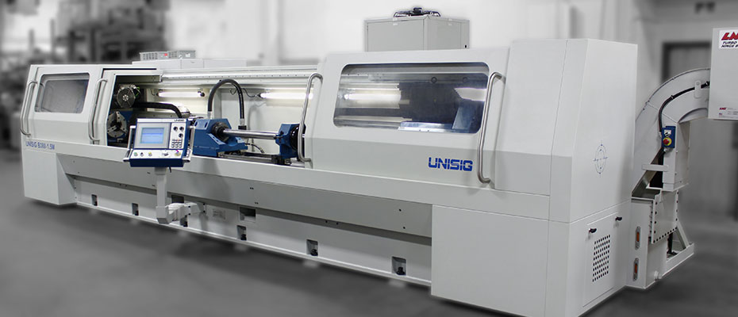
UNISIG B380
BTA Deep Hole Drilling Machine with Full Enclosure Guarding
BTA Deep Hole Drilling Machine with Full Enclosure Guarding
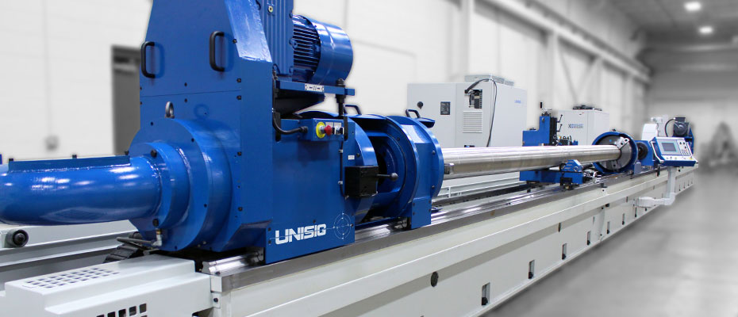
UNISIG B500
BTA Deep Hole Drilling Machine
BTA Deep Hole Drilling Machine
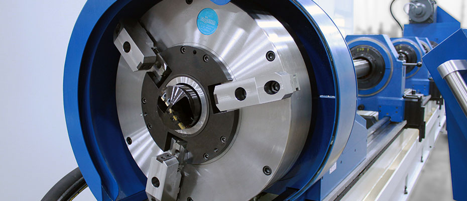
UNISIG B600
BTA Deep Hole Drilling Machine
BTA Deep Hole Drilling Machine
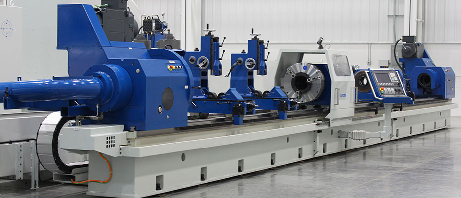
UNISIG B700
BTA Deep Hole Drilling Machine
BTA Deep Hole Drilling Machine
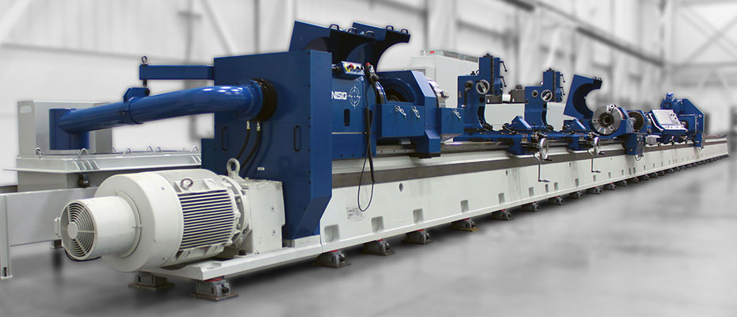
UNISIG B630
BTA Deep Hole Drilling Machine with Rack and Pinion Drive
BTA Deep Hole Drilling Machine with Rack and Pinion Drive
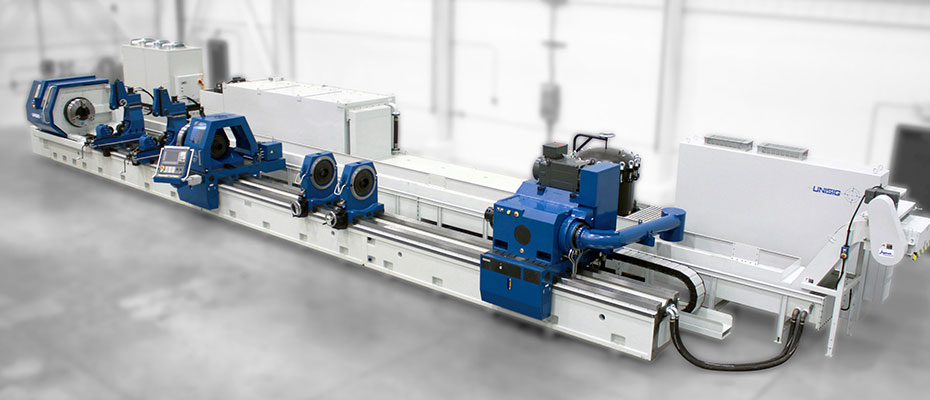
UNISIG B1000
BTA Deep Hole Drilling Machine with Rack and Pinion Drive
BTA Deep Hole Drilling Machine with Rack and Pinion Drive
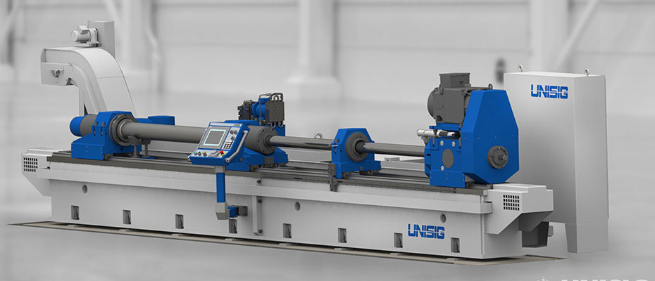
UNISIG S500
Skiving and Roller Burnishing Machine for Hydraulic Cylinder Finishing
Skiving and Roller Burnishing Machine for Hydraulic Cylinder Finishing
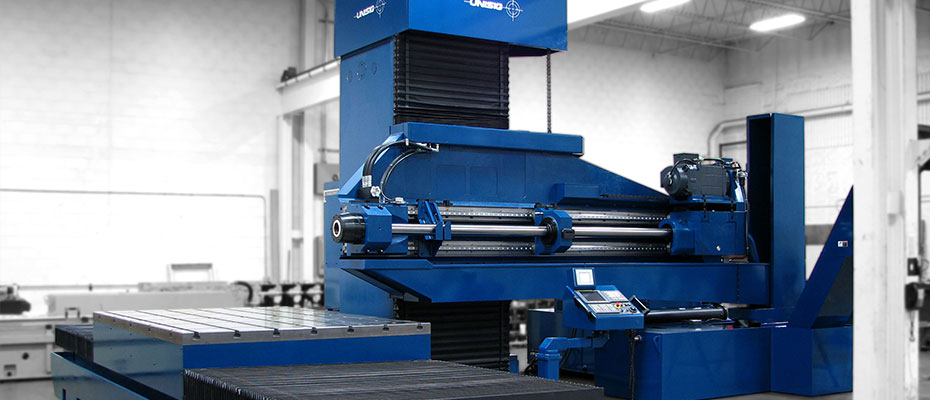
UNISIG USC100
Column-type BTA and gundrilling machine for off-center drilling
Column-type BTA and gundrilling machine for off-center drilling
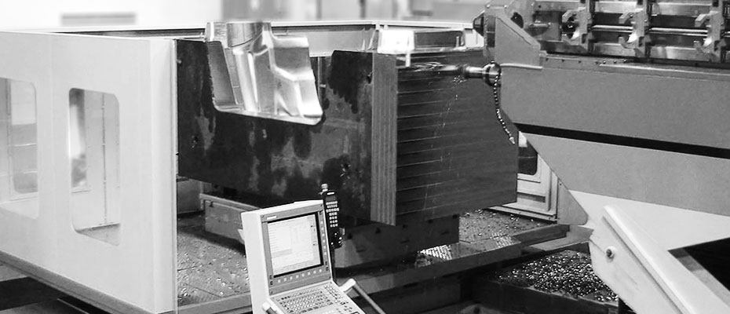
UNISIG USC-M50
Column-type Drilling and Milling center for mold manufacturers
Column-type Drilling and Milling center for mold manufacturers
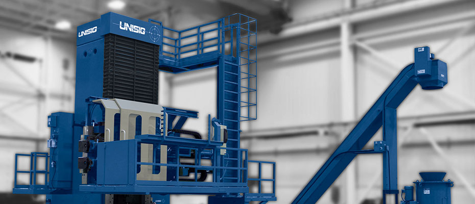
UNISIG USC-TS
Multiple spindle BTA drilling machine for heat exchanger tube sheets
Multiple spindle BTA drilling machine for heat exchanger tube sheets
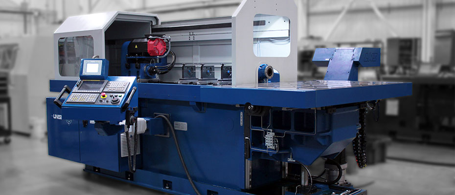
UNISIG USK
Knee-type deep hole drilling machine for off-center drilling
Knee-type deep hole drilling machine for off-center drilling
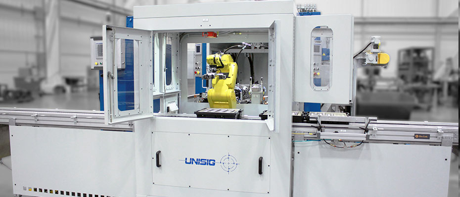
UNISIG UNI Series
Drilling centers with many options for efficient production drilling
Drilling centers with many options for efficient production drilling
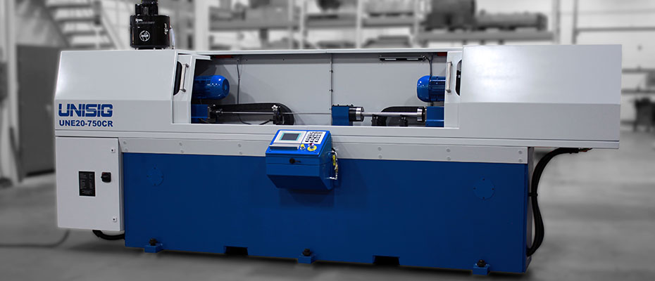
UNISIG UNE Series
Compact gundrilling machines for easy drilling with a low investment
Compact gundrilling machines for easy drilling with a low investment
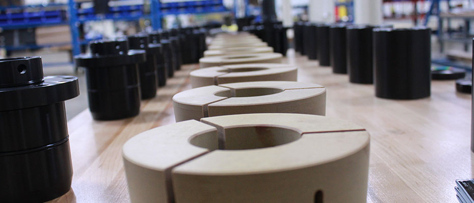
UNISIG BTA Durable Tooling
Durable tooling components for effective and accurate use of deep hole drilling machines
Durable tooling components for effective and accurate use of deep hole drilling machines